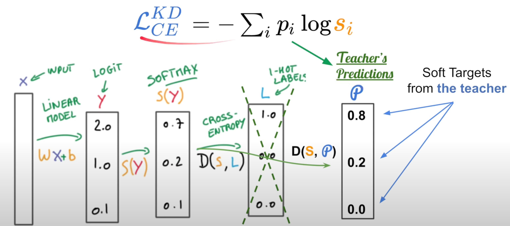
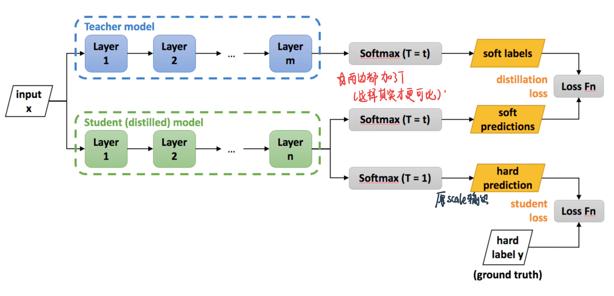

知识蒸馏
Contents
知识蒸馏¶
Knowledge distillation aims at leveraging the prediction power of a large teacher model into effectiverly teaching a smaller student model. And this student model is better suited for production.
Differences betwwen transfer learning and knowledge distillation¶
Transfer Learning: copy all the weights from one model to another
Knowledge distiilation: student can be very different from teacher in terms of model architecture, and second point is that what student is going to intake is the output of the teacher model only
Motivation：Using a whole ensemble of models is cumbersome and may be too computationally expensive to allow deployment to a large number of users, especially if the individual models are large neural nets
Objective function：We want student to learn a soft target:
 \(s_{i}=\frac{\exp \left(z_{i} / T\right)}{\sum_{j} \exp \left(z_{j} / T\right)}\), T is the additional
When \(T \rightarrow 0\), \(s_{i} \rightarrow 1\left(z_{i}=\max \left(z_{j}\right)\right)\) (Low temperature, we don’t want to learn in this case)
When \(T \rightarrow +\infty\), \(s_{i} \rightarrow \frac{1}{J}\)
知识蒸馏原论文¶
1. 为什么用知识蒸馏¶
Training & Inference have different requirements
训练模型的时候，可以
training must extract structure from very large, highly redundant datasets
使用过参数化的深度神经网络，这类网络学习能力非常强，因此往往加上一定的正则化策略(如dropout)
ensemble models and get averaged prediction
Deploy给用户的时候需要operate in real time
一般地，大模型（复杂网络）拥有良好的性能和泛化能力，他们学习到的是mapping from input vectors to output vectors
可以the trained model assigns probabilities to all of the incorrect answers and even when these probabilities are very small, the relative probabilities of incorrect answers tell us a lot about how the cumbersome model tends to generalize.
例子：An image of a BMW, for example, may only have a very small chance of being mistaken for a garbage truck, but that mistake is still many times more probable than mistaking it for a carrot.
从头训练一个小模型, 从经验上看是很难达到上述效果的, 小模型因为网络规模较小，表达能力有限(limited capacity)。也许我们能先训练一个大而强的模型, 然后将其包含的知识转移给小的模型去指导小模型训练，使得小模型具有与大模型相当的性能与泛化能力（generalize in the same way as the large model），但是参数数量大幅降低，从而实现模型压缩与加速。
那么如何做到呢? Hinton等人最早在文章《Distilling the Knowledge in a Neural Network》中提出了知识蒸馏这个概念，其核心思想是先训练一个复杂网络模型，然后使用这个复杂网络的输出probabilities produced by the cumbersome model(soft-label) 和 数据的真实标签(true label) 去训练一个更小的网络。训练和部署之间存在着一定的不一致性: :
2. 知识蒸馏基本框架¶
知识蒸馏是对模型的能力进行迁移，根据迁移的方法不同可以简单分为目标蒸馏（也称为Soft-target蒸馏或Logits方法蒸馏）和特征蒸馏的算法两个大的方向，下面我们对其进行介绍。
2.1 Logits方法蒸馏¶
Hinton的神作《Distilling the Knowledge in a Neural Network》即是logits蒸馏。
在这篇论文中，Hinton将问题限定在分类问题下，分类问题的共同点是模型最后会有一个softmax层，其输出值对应了相应类别的概率值。在知识蒸馏时，由于我们已经有了一个泛化能力较强的Teacher模型，我们在利用Teacher模型来蒸馏训练Student模型时，可以直接让Student模型去学习Teacher模型的泛化能力。一个很直白且高效的迁移泛化能力的方法就是：使用softmax层输出的类别的概率来作为“Soft-target” 。
如果Teacher是ensemble of simpler models的话：we can use an arithmetic or geometric mean of their individual predictive distributions as the soft targets
2.2.1 Hard-target 和 Soft-target¶
传统的神经网络训练方法是定义一个损失函数，目标是使预测值尽可能接近于真实值（Hard- target），损失函数就是使神经网络的损失值和尽可能小。这种训练过程是对ground truth求极大似然。

Hard-target：原始数据集标注的 one-hot 标签，除了正标签为 1，其他负标签都是 0。
Soft-target：Teacher模型softmax层输出的类别概率，每个类别都分配了概率，正标签的概率最高。
为什么要用soft-target指导Student模型呢？这是因为softmax层的输出，除了正例之外，负标签也带有Teacher模型归纳推理的大量信息，比如某些负标签对应的概率远远大于其他负标签，则代表 Teacher模型在推理时认为该样本与该负标签有一定的相似性。而在传统的训练过程(Hard-target)中，所有负标签都被统一对待。也就是说，知识蒸馏的训练方式使得每个样本给Student模型带来的信息量大于传统的训练方式。
如在MNIST数据集中做手写体数字识别任务，左边输入的“2”更加形似”3”，softmax的输出值中”3”对应的概率会比其他负标签类别高；而右边的”2”更加形似”7”，则这个样本分配给”7”对应的概率会比其他负标签类别高。这两个”2”对应的Hard-target的值是相同的，但是它们的Soft-target却是不同的，由此我们可见Soft-target蕴含着比Hard-target更多的信息。

同时，使用 Soft-target 训练时，梯度的方差会更小，训练时可以使用更大的学习率，所需要的样本也更少。这也解释了为什么通过蒸馏的方法训练出的Student模型相比使用完全相同的模型结构和训练数据只使用Hard-target的训练方法得到的模型，拥有更好的泛化能力。
2.2.2 知识蒸馏的具体方法¶
logits就是神经网络经过softmax之前的数值。Softmax数值highlights the larger value but while doing this it loses the relativeness with other values，但这种相对的关系很重要，所以我们要对logits在高温下做softmax，即：
T(温度)越高，softmax输出的distribution越趋于平滑，其分布的熵越大，负标签携带的信息会被相对地放大，模型训练将更加关注负标签。温度在正常设置的时候是1
当想从负标签中学到一些信息量的时候，温度应调高一些；
当想减少负标签的干扰的时候，温度应调低一些；
温度的作用原文
For example, one version of a 2 may be given a probability of \(10^{-6}\) of being a 3 and \(10^{-9}\) of being a 7 whereas for another version it may be the other way around. This is valuable information that defines a rich similarity structure over the data (i. e. it says which 2’s look like 3’s and which look like 7’s) but it has very little influence on the cross-entropy cost function during the transfer stage because the probabilities are so close to zero.之前Caruana来处理这个问题的方法是using the logits (the inputs to the final softmax)然后再minimize the squared difference between the logits produced by the cumbersome model and the logits produced by the small model. 这种方法其实distillation的一个a special case
import numpy as np
logits = np.array([100, 10, 1]) # the Z value
print(F'Original Z=∑w·x={np.exp(logits)}')
print('——'*10, 'Apply Distillation', '——'*10)
for T in [1, 10, 50, 100]:
logits_normalized = np.exp(logits/T) / sum(np.exp(logits/T))
print(f'Temperature {T} ⇒', logits_normalized)
Original Z=∑w·x=[2.68811714e+43 2.20264658e+04 2.71828183e+00]
———————————————————— Apply Distillation ————————————————————
Temperature 1 ⇒ [1.00000000e+00 8.19401262e-40 1.01122149e-43]
Temperature 10 ⇒ [9.99826446e-01 1.23388386e-04 5.01659740e-05]
Temperature 50 ⇒ [0.76724295 0.12682441 0.10593265]
Temperature 100 ⇒ [0.56238341 0.22864803 0.20896856]
可以看到温度越高，各个class的概率就越来越接近（更加smooth）

总的来说，T的选择和Student模型的大小有关，Student模型参数量比较小的时候，相对比较低的温度就可以了。因为参数量小的模型不能学到所有Teacher模型的知识，所以可以适当忽略掉一些负标签的信息。
最后，在整个知识蒸馏过程中，我们先使用一个高的温度去学习尽可能多的信息，然后在测试阶段恢复“低温“，从而将原模型中的知识提取出来，因此将其称为是蒸馏。
2.2.3 知识蒸馏的训练¶
训练一个好的Teacher模型；
在Teacher的输出logits上做高温下的softmax，产生 Soft-target；
用{soft_target, T_high}, {hard_target, T_1}同时训练 Student模型；
设置温度T=1，Student模型线上做inference。
在训练student的时候，student的loss分为两部分：
\(L=\alpha L_{\text {soft }}+\beta L_{\text {hard }}\)

\(L_{soft}=-\sum_{i} p_{i}^{T} \log q_{i}^{T}\), 其中 \(q_{i}^{T}=\frac{\exp (z_{i} / T)}{\sum_{j} \exp(z_{j} / T)}, \quad p_{i}^{T}=\frac{\exp (v_{i} / T)}{\sum_{j} \exp (v_{j} / T)}\)
\(\frac{\partial L_{s o f t}}{\partial z_{i}}=\frac{1}{T}(q_{i}^{T}-p_{i}^{T})=\frac{1}{T}(\frac{\exp (z_{i} / T)}{\sum_{j} \exp(z_{j} / T)}-\frac{\exp (v_{i} / T)}{\sum_{j} \exp (v_{j} / T)})\)
对Teacher的输出logits做高温下的softmax得到一个distribution；对student的输出logits也在同样的高温下做softmax得到一个distribution，然后计算这两个distribution的KL散度。目的是让student从teacher那里学习尽可能多的信息。
\(L_{\text {hard }}=-\sum_{i} y_{i} \log q_{i}^{1}\), 其中 \(q_{i}^{1}=\frac{\exp (z_{i})}{\sum_{j} \exp(z_{j})}\)
\(\frac{\partial L_{h a r d}}{\partial z_{i}}=(q_{i}^{1}-y_{i})=\frac{\exp (z_{i})}{\sum_{j} \exp(z_{j})}-y_{i}\)
这个就是平时用的交叉熵损失——在温度为1的时候做softmax对真实的label求交叉熵损失。这是因为Teacher模型也有一定的错误率，使用真实label可以有效错误被传播给Student模型的可能性。打个比喻，老师虽然学识远远超过学生，但是他仍然有出错的可能，而这时候如果学生在老师的教授之外，可以同时参考到标准答案，就可以有效地降低被老师偶尔的错误“带偏”的可能性。
alpha和beta是L_soft和L_hard的权重。实验发现，当L_hard权重较小时，能产生最好的效果，这是一个经验性的结论：
L_soft贡献的梯度大约为L_hard的 \(\frac{1}{T^{2}}\) ，因此在同时使用Soft-target和Hard-target的时候，需要在L_soft的权重上乘以T^2的系数，这样才能保证Soft-target和Hard-target贡献的梯度量基本一致。
温度对模型整体效果的影响是这样的
低温的时候：student会不会太care logits非常负的东西，好处在于大的模型在训练的时候可能是unconstrained by the cost function used的所以会很noisy
高温的时候可以更多的了解negative logits中的pattern
同时，注意当T达到一定程度的时候，loss function求出来的梯度会接近这样的一个loss function的梯度：
对于每一条数据直接比较logits—— 记 Net-T 产生的某个logits是 \(v_{i}\), Net-S 产生的 logits 是 \(z_{i}\), 最小化\(\frac{1}{2}\left(z_{i}-v_{i}\right)^{2}\)
这是因为T很大的时候\(\frac{1}{\sum_{j} \exp \left(z_{i}\right)} \approx \frac{T}{\sum_{j} \exp \left(z_{i} / T\right)}\) 所以soft项 \(z_{i}, v_{i}\) 为零均值化,于是有
\(\frac{\partial \mathcal{H}_{\text {soft }}}{\partial z_{i}}=\frac{1}{T}\left(\frac{1+z_{i} / T}{N+\sum_{j}\left(z_{j} / T\right)}-\frac{1+v_{i} / T}{N+\sum_{j}\left(v_{j} / T\right)}\right)=\frac{1}{N T^{2}}\left(z_{i}-v_{i}\right)\)
也就是这个公式的损失函数。因此——直接match logits的做法是知识蒸馏的特殊情形！
当学生模型太简单的时候，中等的温度有好处，说明把那些非常非常小logits的输出直接ignore掉会比较有用
其他¶
另外一种知识蒸馏思路是特征蒸馏方法，如下图所示。它不像Logits方法那样，Student只学习Teacher的Logits这种结果知识，而是学习Teacher网络结构中的中间层特征。最早采用这种模式的工作来自于论文《FITNETS：Hints for Thin Deep Nets》，它强迫Student某些中间层的网络响应，要去逼近Teacher对应的中间层的网络响应。这种情况下，Teacher中间特征层的响应，就是传递给Student的知识。在此之后，出了各种新方法，但是大致思路还是这个思路，本质是Teacher将特征级知识迁移给Student。因此，接下来我们以这篇论文为主，详细介绍特征蒸馏方法的原理。

一个既宽又深的模型通常需要大量的乘法运算，部署起来难度比较大；那么，一个具有比Teacher网络更多的层但每层具有较少神经元数量的Student网络称为“thin deep network”，即：更深、更窄。

这个student模型的训练分为两阶段：
第一阶段：对应上图(a)(b). 首先选择待蒸馏的中间层（即Teacher的Hint layer和Student的Guided layer），如图中绿框和红框所示。由于两者的输出尺寸可能不同，因此，在Guided layer后另外接一层卷积层（图b中蓝色框），使得输出尺寸与Teacher的Hint layer匹配。接着通过知识蒸馏的方式训练Student网络的Guided layer，使得Student网络的中间层学习到Teacher的Hint layer的输出，最小化两者网络输出的MSE差异作为损失（特征蒸馏）。
第二阶段： 对应上图(c)在训练好Guided layer之后，将当前的参数作为网络的初始参数，来进行logits蒸馏。损失函数依然是两部分的加和：soft label的KL散度、真实label的交叉熵损失（和前文描述的一样）。